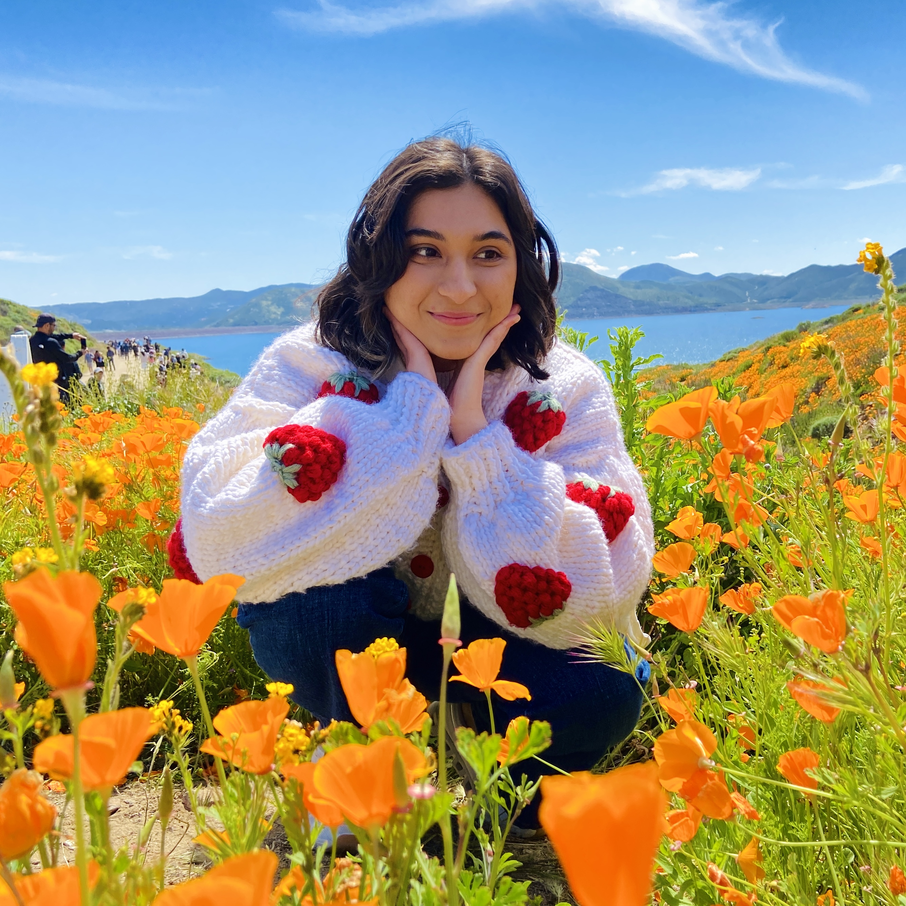

Maizah Ali
About Me
Hi! I'm a third-year undergraduate at UCLA double majoring in International Development Studies
and Cognitive Science (one of my greatest sources of anxiety is having to explain what my two
majors are about, so please don't ask). As you can tell, my interests are kind of all over the place, but
I'm very passionate about thinking about development critically and in relation to colonialism, imperialism,
and white supremacy. I also really love all types of art, and I enjoy creating illustrations in my (virtually nonexistent)
free time (Procreate is the best app ever, change my mind 😩).
To give you an idea of what my course schedule looks like, here are some favorite UCLA classes:
- GLB ST 145: Rethinking Global Capitalism
- HIST 12C: History of Anti-Colonial Thought
- CLUSTER 27: Global Islam
- CS 180: Algorithms and Complexity (Pain™ class, but interesting)
Talk to me about...
- Illustration & animation! In an alternate universe I'd work at Pixar...
- All the "ism's": colonialism, imperialism, capitalism, etc. Yes, I'm a massive nerd!
- Fictional characters you are currently brainrotting over (I am currently in shambles over the Six of Crows duology 🥺🖤)